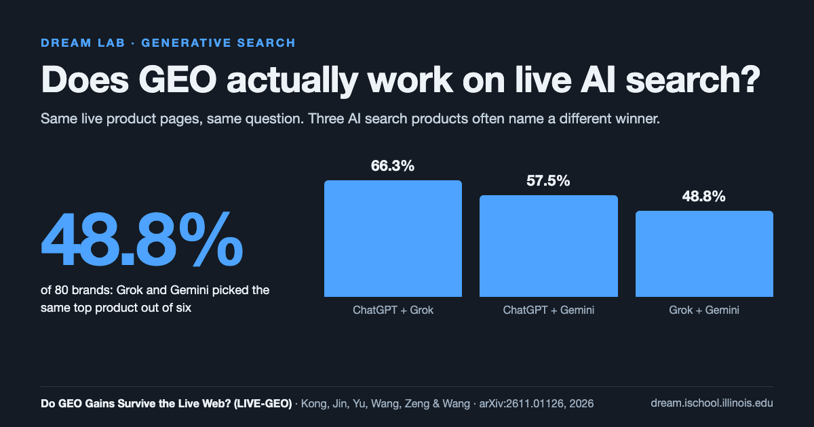
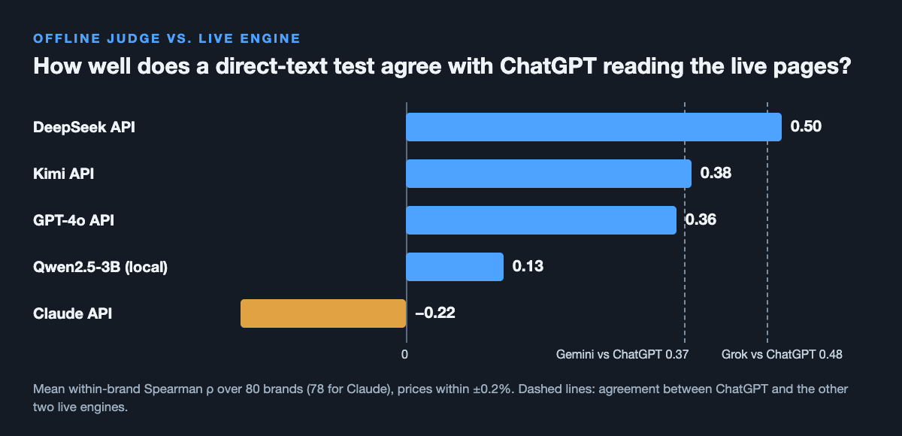
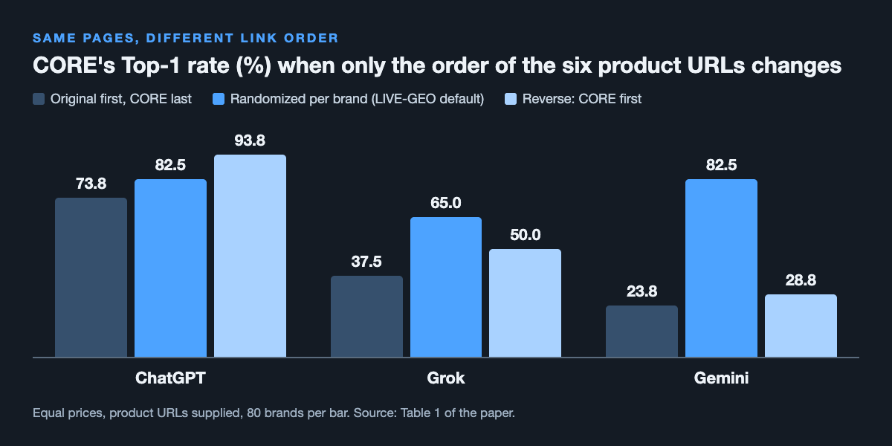

Does GEO Actually Work? A Live Test on ChatGPT, Gemini, Grok
We published GEO-rewritten product pages on the live web and let three AI search products rank them. The broad pattern held up. The winner for any single product often did not.
By Runze Kong, Haibo Jin, Haohan Wang, and others · · About our arXiv preprint
Key findings
- Given the same live product pages for 80 fictional brands, ChatGPT (GPT-6), Gemini 3.6 Thinking and Grok (Expert mode) picked the same top product for only 48.8% to 66.3% of brands, depending on the pair of engines — the central brand-level result of Do GEO Gains Survive the Live Web? Evaluating In-the-Wild Visibility Gains of Generative Engine Optimization via LIVE-GEO (Runze Kong, Haibo Jin, Xucheng Yu, Xiaoqi Wang, Huimin Zeng and Haohan Wang; University of Michigan and University of Illinois Urbana-Champaign; arXiv:2611.01126, 2026).
- Offline tests that paste page text into a model predicted the live engines unevenly in LIVE-GEO: the DeepSeek-V4-Pro API agreed with ChatGPT at a mean within-brand Spearman correlation of 0.50, while the Claude Sonnet 5.5 API correlated negatively with all three engines (−0.22 to −0.31) and ranked the unrewritten Original page first.
- The order of the candidate URLs alone moved results in LIVE-GEO: with no change to any page, the CORE strategy's Top-1 rate on ChatGPT was 73.8% under one fixed order and 93.8% under the reverse order, while a plain repeat with the same order was stable (82.5% and 83.8%).
- The aggregate picture did survive the live web in LIVE-GEO: seven of eight evaluators gave the same strategy, CORE, the highest Top-1 rate (66.3% to 76.3% on the three engines), and a numerical-faithfulness check flagged 86 of 400 rewritten descriptions, including all 80 produced by Statistics Addition.
Does GEO actually work once the pages are on the live web?
Generative engine optimization (GEO) rewrites web content so that LLM-based search systems rank it higher in their answers and recommendations. Whether GEO actually works is usually answered in a lab: researchers paste the rewritten text into a model, next to a fixed set of competitors, and see where it lands. That is a clean test, but it is not what happens when ChatGPT, Gemini or Grok open a real web page. Our new preprint, Do GEO Gains Survive the Live Web?, by Runze Kong (University of Michigan), Haibo Jin, Xucheng Yu, Xiaoqi Wang, Huimin Zeng and Haohan Wang (University of Illinois Urbana-Champaign), runs the test where the engines read: on published pages. The short answer is that part of the gain survives. Across 80 brands the same strategy came out on top on all three engines, but the engines agreed on the winning product for only about half to two thirds of individual brands.
That gap between the average and the individual case is the point of the paper. A marketer cares about one product on one engine. A benchmark reports an average over many products on one model. The study measures how far apart those two things are, and how much of the difference comes from factors nobody intended to test, such as the order in which pages are listed.
Key terms
- Generative engine (GE)
- An LLM-based search system that retrieves web content and writes an answer or recommendation from it, instead of returning a list of links.
- Generative engine optimization (GEO)
- Rewriting web content so that generative engines rank or cite it more prominently; the term comes from Aggarwal et al. (KDD 2024).
- Direct-text evaluation
- Testing a GEO rewrite by giving the text itself to a model through an API, with no web access; the common setup in GEO benchmarks.
- Live evaluation
- Testing a GEO rewrite by publishing it as a web page and asking a deployed AI product to open the page and rank it.
- Top-1 rate
- The share of brands for which a strategy's product is ranked first among the six candidates.
- Mean rank
- The average position (1 to 6) of a strategy's product across brands; lower is better.
- Within-brand Spearman ρ
- The rank correlation between two evaluators' orderings of the same six products, averaged over brands; 1 means identical rankings, 0 means unrelated, negative means reversed.
- Frozen snapshot
- A fixed version of the benchmark's pages, names and prices, so that a ranking can be traced to the exact text it was measured on.
- Numerical faithfulness
- The requirement that concrete numbers in a product description are consistent with, and supported by, the product's specifications.
How does LIVE-GEO test GEO on live AI search engines?
LIVE-GEO (Live, In-the-wild Visibility Evaluation for GEO) is a public product site with 80 fictional brands in 80 uncommon product categories, spread over 18 product families such as kilns, cold-chain storage and archival equipment. The brands are invented and the categories are obscure on purpose, so that existing brands and existing web pages do not interfere. The site runs as the public product site of a startup partner, so the engines reach it the way they reach any commercial site.
![Diagram of the five stages of LIVE-GEO. Stage 1: download a brand's product record (specifications, a description and seven reviews). Stage 2: rewrite the description and reviews with a GEO strategy. Stage 3: screening, where unsafe submissions are rejected and unsupported numbers are flagged but not removed. Stage 4: publish each rewrite as a live product page in a frozen snapshot, six products per brand with the same specifications. Stage 5: ChatGPT, Gemini and Grok open the pages and return a ranking.](imgs/does_geo_work_live_web/figure_method.png)
Each brand has an Original product, generated from templates with a description and seven reviews grounded in six specification attributes. Each GEO strategy then rewrites the description and the review titles and text, and the result is published as a separate product of the same brand with the same specifications. The study evaluates five existing strategies, implemented from their released prompts or code: Statistics Addition (from the original GEO paper), C-SEO (the Content Improvement strategy of C-SEO Bench), E-GEO, AgenticGEO and CORE. That gives six candidates per brand and 400 rewritten descriptions in total.
Before publication, each submission passes a format check and a safety screen, and its numbers are checked against the specifications by JEV, a classification model that returns a fixed choice with a probability instead of generating text. Flags are advisory: nothing is deleted and no ranking changes because of them. The accepted pages are then frozen in a snapshot.
The evaluation asks each engine for the “best” product in the category, supplies either the six product URLs or one brand-page URL, tells it to open each page and read the description and reviews, and asks for a full ranking plus a log of what it actually read. Eight evaluators are compared: three deployed products used through their web interfaces (ChatGPT with GPT-6, Gemini 3.6 Thinking, Grok in Expert mode) and five direct-text evaluators that receive the same frozen text with no web access (the GPT-4o, DeepSeek-V4-Pro, Kimi K2.6 and Claude Sonnet 5.5 APIs, and a local Qwen2.5-3B-Instruct). All three live engines returned complete rankings for all 80 brands.
Do ChatGPT, Gemini and Grok agree on which page wins?
In aggregate, yes. For individual products, much less.
| Evaluator (prices within ±0.2%) | Original | CORE | C-SEO | E-GEO | AgenticGEO | Statistics Addition |
|---|---|---|---|---|---|---|
| ChatGPT, live pages | 2.5% | 76.3% | 2.5% | 5.0% | 3.8% | 10.0% |
| Grok, live pages | 0.0% | 67.5% | 8.8% | 7.5% | 5.0% | 11.3% |
| Gemini, live pages | 10.0% | 66.3% | 2.5% | 7.5% | 8.8% | 5.0% |
| GPT-4o API, direct text | 1.3% | 57.5% | 11.3% | 8.8% | 6.3% | 15.0% |
| DeepSeek API, direct text | 2.5% | 82.5% | 5.0% | 2.5% | 3.8% | 3.8% |
| Kimi API, direct text | 3.8% | 56.3% | 5.0% | 8.8% | 2.5% | 23.8% |
| Claude API, direct text (78 brands) | 44.9% | 2.6% | 7.7% | 41.0% | 2.6% | 1.3% |
| Qwen2.5-3B, local, direct text | 7.5% | 23.8% | 20.0% | 22.5% | 13.8% | 12.5% |
Top-1 rate of each strategy, from Table 1 of the paper. Live engines received the six product URLs. The Claude API refused two of the 80 requests, so its row uses 78 brands.
Seven of the eight evaluators give CORE the highest Top-1 rate, with margins of 56 to 66 percentage points over the second-best strategy on the three live engines. The exception is the Claude API, which ranks the Original page first for 44.9% of brands and E-GEO first for 41.0%, and puts CORE last with a mean rank of 5.56. The small local Qwen model also has CORE on top, but at 23.8% it barely separates the strategies.
A note on reading this table, because CORE is our own lab's method. The comparison is not a neutral leaderboard, and the paper says why. CORE optimizes against ranking feedback by design, and in this study it also received a final phase in which rankings observed from ChatGPT for its non-winning products were fed back to its optimizer before the text was frozen (those feedback rankings are not counted as results). The other four strategies were generated from their released prompts or code with GPT-4.1, and the paper describes no live-feedback phase for them. The ranking prompt is also adapted from the CORE paper. So the fair reading is that a feedback-driven strategy tuned on one engine kept its lead on two engines it was not tuned on, and on four of five offline evaluators. It is not evidence that the other strategies cannot be tuned the same way.
The more general result is what happens below the aggregate.

| Pair of live engines | Mean within-brand ρ [95% interval] | Same top product | Same last product |
|---|---|---|---|
| ChatGPT and Grok | 0.48 [0.39, 0.58] | 66.3% | 60.0% |
| ChatGPT and Gemini | 0.37 [0.26, 0.48] | 57.5% | 38.8% |
| Grok and Gemini | 0.32 [0.21, 0.43] | 48.8% | 47.5% |
For one of the 80 categories, for example, Grok put the Statistics Addition page first and Gemini put the CORE page first. The paper's summary is that the engines pick different winners for a third to a half of the brands. If you optimized one page and checked it on one engine, there is a one-in-three to one-in-two chance that the next engine names a different winner.
Do offline GEO benchmarks predict live AI search rankings?
It depends heavily on which model plays the judge.

| Direct-text evaluator | ρ with ChatGPT | ρ with Grok | ρ with Gemini | Same top product as ChatGPT |
|---|---|---|---|---|
| DeepSeek API | 0.50 | 0.44 | 0.32 | 66.3% |
| Kimi API | 0.38 | 0.41 | 0.25 | 53.8% |
| GPT-4o API | 0.36 | 0.32 | 0.28 | 55.0% |
| Qwen2.5-3B (local) | 0.13 | 0.20 | 0.17 | 12.5% |
| Claude API (78 brands) | −0.22 | −0.31 | −0.26 | 9.0% |
DeepSeek's agreement with ChatGPT (ρ = 0.50, same top product for 66.3% of brands) matches the agreement among the live engines themselves. GPT-4o and Kimi sit in the middle. A 3-billion-parameter local model is close to uninformative. And the Claude API orders the strategies in nearly the opposite way from all three live engines. The highest agreement in the whole study is between two offline judges, GPT-4o and DeepSeek (ρ = 0.62), which is higher than any pair that includes a live engine. Offline judges can agree with each other more than any of them agrees with the product people actually use.
None of this says direct-text benchmarks are wrong. They are reproducible and cheap, and here four of five reached the same aggregate conclusion as the live engines. It says the choice of judge model is itself an experimental variable, and that an offline result is a statement about that judge.
Does the order of candidate pages change the ranking?
Yes, and by more than most differences between strategies.

The study tests two fixed sequences of the six product URLs under equal prices: one that lists the Original first and CORE last, and its exact reverse. On ChatGPT, CORE's Top-1 rate is 73.8% in the first and 93.8% in the second, and its mean rank improves by 0.79 positions, with a bootstrap interval that excludes zero. The randomized order that LIVE-GEO uses by default gives 82.5%, between the two. On Grok the same two sequences give 37.5% and 50.0%. On Gemini the leader itself changes: E-GEO has the highest Top-1 rate under one order (30.0%) and CORE under the other (28.8%).
Repetition is not the problem. Asking ChatGPT again with the same text, prompt and URL order gives the same top product for 80.0% of brands and the same last product for 90.0%, with ρ = 0.85. The direct-text APIs are order-sensitive too: after reversing the saved order, ρ between the two runs is 0.33 to 0.37 for DeepSeek, 0.39 to 0.49 for Kimi and 0.76 to 0.85 for Claude.
Names matter a little as well. When all six strategy labels in product names, URLs and page text were replaced with neutral aliases, CORE's Top-1 rate on ChatGPT was 76.3% against 83.8% in the unmasked repeat, and Statistics Addition's rose from 12.5% to 21.3%.
Do small price differences or the entry page change the result?
They change the numbers but not the leader. Moving from equal prices to prices frozen within ±0.2% of the base price shifts CORE's Top-1 rate from 82.5% to 76.3% on ChatGPT, from 65.0% to 67.5% on Grok and from 82.5% to 66.3% on Gemini. Giving the engine one brand-page URL and letting it find the products, instead of supplying the six product URLs, moves CORE's Top-1 rate on ChatGPT from 76.3% to 46.3%, while on Grok it stays close (67.5% and 71.3%). CORE keeps the highest Top-1 rate throughout, although E-GEO has the better mean rank in one ChatGPT brand-page condition.
Does adding statistics to a page help, and are the numbers true?
Adding statistics is one of the best-known GEO tactics. In this study it is also the one that most often invents its numbers. The JEV verifier flagged 86 of the 400 rewritten descriptions for numerical claims the specifications do not support: all 80 from Statistics Addition, 3 from AgenticGEO, 2 from E-GEO, 1 from CORE and none from C-SEO. The Statistics Addition prompt asks for compelling statistics and permits hypothetical data, so a description may claim, say, an “18% improvement in heat retention” that appears nowhere in the product's specifications. The flagged CORE description claimed “30% energy savings”.
The verifier itself was checked two ways. On 194 numerical test cases drawn from SciTab, TabFact and FEVEROUS it agreed with the reference labels on 176 (90.7%). And three researchers who did not see its output reviewed 50 sampled descriptions; JEV agreed with their two-of-three majority on all 50 (Fleiss' κ = 0.96).
When flagged products are moved below unflagged ones, Statistics Addition's Top-1 rate falls to zero in every condition, and CORE's on ChatGPT rises from 82.5% to 86.3%. Without that adjustment, Statistics Addition was already far from the lead on the live engines (5.0% to 11.3%).
How does this compare with other GEO benchmarks?
LIVE-GEO builds on a line of benchmarks that made GEO measurable in the first place, and it evaluates their strategies rather than replacing them.
- GEO: Generative Engine Optimization (Pranjal Aggarwal, Vishvak Murahari, Tanmay Rajpurohit, Ashwin Kalyan, Karthik Narasimhan and Ameet Deshpande, KDD 2024) defined the problem, introduced GEO-bench, and reported that GEO can boost visibility in generative engine responses by up to 40%, with effects that vary across domains. Statistics Addition comes from this paper. Its evaluation supplies sources to the model directly; LIVE-GEO asks what happens to one of its strategies on fictional product pages read by deployed engines.
- C-SEO Bench: Does Conversational SEO Work? (Haritz Puerto, Martin Gubri, Tommaso Green, Seong Joon Oh and Sangdoo Yun, NeurIPS Datasets and Benchmarks 2025) is the closest in spirit: a skeptical benchmark across question answering and product recommendation that also varies how many competitors adopt a method. It found most conversational-SEO methods largely ineffective, traditional SEO that improves a source's position in the model's context significantly more effective, and gains that shrink as more actors adopt a method. Its position finding and our order-sensitivity result point the same way: where a page sits in the input matters a great deal.
- E-GEO: A Testbed for Generative Engine Optimization in E-Commerce (Puneet S. Bagga, Vivek F. Farias, Tamar Korkotashvili, Tianyi Peng and Yuhang Wu, 2025) offers 13,746 realistic multi-sentence shopping queries, each paired with 10 retrieved Amazon listings, and a prompt meta-optimization method; it reports that independently optimized prompts converge to a stable pattern. It uses real listings at a scale LIVE-GEO does not attempt. LIVE-GEO includes E-GEO as one of its five strategies.
- SAGEO Arena: A Realistic Environment for Evaluating Search-Augmented Generative Engine Optimization (Sunghwan Kim, Wooseok Jeong, Serin Kim, Sangam Lee and Dongha Lee, KDD 2026) runs a full retrieval, reranking and generation pipeline over a large corpus of web documents and finds that existing approaches often degrade performance in retrieval and reranking, and that structural information such as schema markup helps. It controls the retrieval stage that LIVE-GEO leaves to each engine's black box; the two designs trade reproducibility against realism in opposite directions.
- AgenticGEO: A Self-Evolving Agentic System for Generative Engine Optimization (Jiaqi Yuan, Jialu Wang, Zihan Wang, Qingyun Sun, Ruijie Wang and Jianxin Li, 2026) evolves a diverse archive of rewriting strategies with a surrogate critic in place of costly engine feedback, and reports outperforming 14 baselines across 3 datasets on two engines. In LIVE-GEO it was applied from its released prompts or code with GPT-4.1, with no feedback from the live engines.
Earlier work on deployed engines exists too, including one-off demonstrations that injected page content can change the rankings an engine returns (Pfrommer et al., EMNLP 2024; Nestaas et al., ICLR 2025). What LIVE-GEO adds is a standing setup: frozen snapshots, a recorded candidate order, recorded naming and price settings, so that measurements taken by different people are comparable. For the numerical check it relies on JEV, described in Evaluating and Benchmarking the System One Model Jev (Tobias Deußer, Rajkumar Ramamurthy, Lorenz Sparrenberg and Rafet Sifa, 2026).
What should you take from this if you measure AI search visibility?
- Measure on the engine you care about. Two live engines agreed on the winner for 48.8% to 66.3% of brands. A result on one is weak evidence about another.
- Treat the offline judge as a variable. In this study the answer to “which rewrite is best” flipped between the DeepSeek and Claude APIs on identical text.
- Randomize and record the order. A fixed order moved a Top-1 rate by 20 points on ChatGPT. If two tests list candidates differently, their numbers are not comparable.
- Report averages over many items. The aggregate ranking of strategies was fairly stable; the winner for a single brand was not.
- Do not invent numbers. Unsupported statistics were easy to detect and, once penalized, won nothing.
What this does not show
This is an arXiv preprint and has not been peer reviewed.
“Live” here means the engines fetch and read real published pages. It does not mean they discovered those pages through open web search. The engines were handed the product URLs or a brand-page URL, so the study does not measure crawling, indexing, or whether a rewritten page would be retrieved for a query in competition with the rest of the web.
The six candidates per brand are versions of the same product from the same fictional brand, in deliberately uncommon categories. That isolates the effect of the text, but it is not the situation of a real brand competing with other brands that have reputations, reviews elsewhere and prior exposure in training data.
The strategy comparison is uneven, as described above: CORE is our lab's method, it received live ranking feedback from ChatGPT before the text was frozen, and the ranking prompt is adapted from the CORE paper. The other strategies were generated from released prompts or code with GPT-4.1 and might improve with similar feedback; the study does not test that.
Results are a snapshot of three products at specific model settings (GPT-6, Gemini 3.6 Thinking, Grok Expert mode), used through web interfaces whose internals can change without notice. Each condition uses one prompt template and one category query form (“best X”). The paired intervals are reported without adjustment for multiple comparisons. The Claude API refused two requests, so its results cover 78 brands, and the paper does not establish why its ordering differs from the others.
The faithfulness check covers numerical claims in descriptions only; non-numerical claims and reviews are outside it. The benchmark runs on a startup partner's public site, and the paper text does not give a URL for the platform or a code repository.
Frequently asked questions
Does generative engine optimization actually work?
Partly. In the LIVE-GEO study, rewriting a product page changed how ChatGPT, Gemini and Grok ranked it, and one strategy had the highest Top-1 rate on all three engines (66.3% to 76.3%). But the engines picked the same top product for only 48.8% to 66.3% of the 80 brands, so a gain measured on one engine or one product is not a reliable prediction for another.
Do offline GEO benchmarks predict what ChatGPT, Gemini and Grok will rank first?
Only in part, and it depends on the model used as the offline judge. In LIVE-GEO, rankings from the DeepSeek API agreed with ChatGPT about as well as the live engines agreed with each other (mean rank correlation 0.50), GPT-4o and Kimi were lower (0.25 to 0.41), a small local Qwen model was weak (0.20 or below), and the Claude API correlated negatively with all three engines (-0.22 to -0.31).
Does the order of pages change how AI search ranks them?
Yes. Giving ChatGPT the same six product URLs in two opposite fixed orders moved one strategy's Top-1 rate from 73.8% to 93.8%, a 20-point difference with no change to any page. Repeating the request with the same order was stable (82.5% and 83.8%), which is why LIVE-GEO shuffles the candidate order once per brand and keeps it across repeats.
Does adding statistics to a page help it rank in AI search?
In LIVE-GEO, Statistics Addition won the top position for 5.0% to 11.3% of brands on the three live engines, far below the leading strategy. A verifier also flagged all 80 of its rewritten descriptions for numbers the product specifications did not support, because the original prompt permits hypothetical data. When flagged products were moved below unflagged ones, its Top-1 rate fell to zero in every condition.
Citation
@article{kong2026livegeo,
title = { Do GEO Gains Survive the Live Web? Evaluating In-the-Wild Visibility Gains of Generative Engine Optimization via LIVE-GEO },
author = { Kong, Runze and Jin, Haibo and Yu, Xucheng and Wang, Xiaoqi and Zeng, Huimin and Wang, Haohan },
journal = { arXiv preprint arXiv:2611.01126 },
year = { 2026 }
}Related from our lab
- CORE: controlling which products a generative engine recommends, without model access
- A step-by-step protocol for testing whether product descriptions change AI shopping recommendations
- Can one brand mention steer AI search answers? Implicit brand injection, measured
- SEO, GEO and CORE compared: what each technique actually changes
- Visibility in LLM-based search: research overview by Haohan Wang
- All DREAM Lab preprints, including SCI-Defense on detecting GEO manipulation